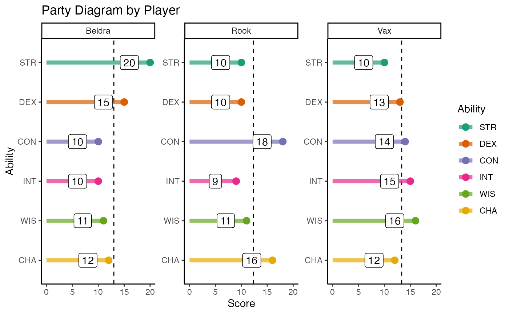
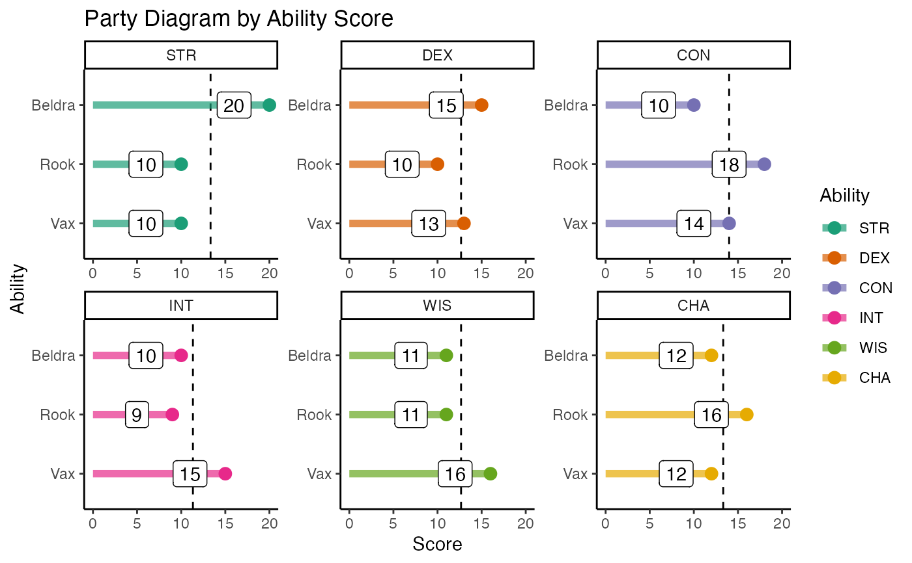

party_diagram.RdInput a party's ability scores and visualize either by ability or player character. Includes dashed line for average of ability scores within chosen `by` parameter. Huge shout out to Tim Schatto-Eckrodt for contributing this function!
party_diagram(by = "player", pc_stats = NULL, quiet = FALSE)(character) either "player" (default) or "ability". Defines the facets of the party diagram
(null / list) either `NULL` (default) or named list of ability scores for each character. If `NULL`, player names and scores are requested interactively in the console
(logical) if FALSE (default), prints interactively assembled PC list for ease of subsequent use
(ggplot object) party diagram as a ggplot object
# \donttest{
# Create named list of PCs and their scores
party_list <- list(
Vax = list(
STR = "10", DEX = "13", CON = "14", INT = "15", WIS = "16", CHA = "12"),
Beldra = list(
STR = "20", DEX = "15", CON = "10", INT = "10", WIS = "11", CHA = "12"),
Rook = list(
STR = "10", DEX = "10", CON = "18", INT = "9", WIS = "11", CHA = "16"))
# Create a party diagram using that list (by player)
party_diagram(by = "player", pc_stats = party_list, quiet = TRUE)

# Can easily group by ability with the same list!
party_diagram(by = "ability", pc_stats = party_list, quiet = FALSE)

# }